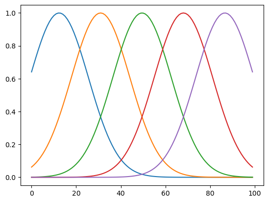
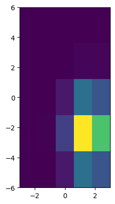

Chapter 3: Supervised Learning#
\[ % Latex macros
\newcommand{\mat}[1]{\begin{pmatrix} #1 \end{pmatrix}}
\newcommand{\p}[2]{\frac{\partial #1}{\partial #2}}
\newcommand{\b}[1]{\boldsymbol{#1}}
\newcommand{\w}{\boldsymbol{w}}
\newcommand{\x}{\boldsymbol{x}}
\newcommand{\y}{\boldsymbol{y}}
\]
import numpy as np
import matplotlib.pyplot as plt
from scipy.integrate import odeint
from mpl_toolkits.mplot3d import Axes3D
%matplotlib inline
Sample Solutions for the Exercise#
Implement an online version of linear regression.
# Read in the data from data/pend.txt
X = np.loadtxt("data/pend.txt")
N, D = X.shape
---------------------------------------------------------------------------
FileNotFoundError Traceback (most recent call last)
Cell In[2], line 2
1 # Read in the data from data/pend.txt
----> 2 X = np.loadtxt("data/pend.txt")
3 N, D = X.shape
File ~/miniforge3/lib/python3.12/site-packages/numpy/lib/_npyio_impl.py:1395, in loadtxt(fname, dtype, comments, delimiter, converters, skiprows, usecols, unpack, ndmin, encoding, max_rows, quotechar, like)
1392 if isinstance(delimiter, bytes):
1393 delimiter = delimiter.decode('latin1')
-> 1395 arr = _read(fname, dtype=dtype, comment=comment, delimiter=delimiter,
1396 converters=converters, skiplines=skiprows, usecols=usecols,
1397 unpack=unpack, ndmin=ndmin, encoding=encoding,
1398 max_rows=max_rows, quote=quotechar)
1400 return arr
File ~/miniforge3/lib/python3.12/site-packages/numpy/lib/_npyio_impl.py:1022, in _read(fname, delimiter, comment, quote, imaginary_unit, usecols, skiplines, max_rows, converters, ndmin, unpack, dtype, encoding)
1020 fname = os.fspath(fname)
1021 if isinstance(fname, str):
-> 1022 fh = np.lib._datasource.open(fname, 'rt', encoding=encoding)
1023 if encoding is None:
1024 encoding = getattr(fh, 'encoding', 'latin1')
File ~/miniforge3/lib/python3.12/site-packages/numpy/lib/_datasource.py:192, in open(path, mode, destpath, encoding, newline)
155 """
156 Open `path` with `mode` and return the file object.
157
(...) 188
189 """
191 ds = DataSource(destpath)
--> 192 return ds.open(path, mode, encoding=encoding, newline=newline)
File ~/miniforge3/lib/python3.12/site-packages/numpy/lib/_datasource.py:529, in DataSource.open(self, path, mode, encoding, newline)
526 return _file_openers[ext](found, mode=mode,
527 encoding=encoding, newline=newline)
528 else:
--> 529 raise FileNotFoundError(f"{path} not found.")
FileNotFoundError: data/pend.txt not found.
# columns are: angle angular_velocity input_torque angular_acceleration
plt.plot(X);
---------------------------------------------------------------------------
NameError Traceback (most recent call last)
Cell In[3], line 2
1 # columns are: angle angular_velocity input_torque angular_acceleration
----> 2 plt.plot(X);
NameError: name 'X' is not defined
# Prepare data matrix
X1 = np.c_[np.ones(N), X[:,:-1]] # 1, angle, velocity, torque
Y = X[:,-1] # acceleration
---------------------------------------------------------------------------
NameError Traceback (most recent call last)
Cell In[4], line 2
1 # Prepare data matrix
----> 2 X1 = np.c_[np.ones(N), X[:,:-1]] # 1, angle, velocity, torque
3 Y = X[:,-1] # acceleration
NameError: name 'N' is not defined
# Batch solution: W = (X^T X)^(-1) X^T Y
w = np.linalg.inv(X1.T@X1) @ X1.T@Y
#w = np.linalg.solve(X1.T@X1, X1.T@Y)
print("w =", w)
---------------------------------------------------------------------------
NameError Traceback (most recent call last)
Cell In[5], line 2
1 # Batch solution: W = (X^T X)^(-1) X^T Y
----> 2 w = np.linalg.inv(X1.T@X1) @ X1.T@Y
3 #w = np.linalg.solve(X1.T@X1, X1.T@Y)
4 print("w =", w)
NameError: name 'X1' is not defined
# Online regression
alpha = 0.05 # learning rate
W = np.zeros((N+1,D)) # history of weights
for i in range(N):
y = W[i]*X1[i]
W[i+1] = W[i] + alpha*(Y[i] - y)*X1[i]
print( W[-1])
plt.plot([0,N], np.vstack((w,w)), ":")
plt.plot(W);
---------------------------------------------------------------------------
NameError Traceback (most recent call last)
Cell In[6], line 3
1 # Online regression
2 alpha = 0.05 # learning rate
----> 3 W = np.zeros((N+1,D)) # history of weights
4 for i in range(N):
5 y = W[i]*X1[i]
NameError: name 'N' is not defined
alpha = 0.05 # learning rate
W = np.zeros((N+1,D)) # history of weights
for i in range(N):
j = np.random.randint(N) # random sample from the array
y = W[i]*X1[j]
W[i+1] = W[i] + alpha*(Y[j] - y)*X1[j]
print( W[-1])
plt.plot([0,N], np.vstack((w,w)), ":")
plt.plot(W);
---------------------------------------------------------------------------
NameError Traceback (most recent call last)
Cell In[7], line 2
1 alpha = 0.05 # learning rate
----> 2 W = np.zeros((N+1,D)) # history of weights
3 for i in range(N):
4 j = np.random.randint(N) # random sample from the array
NameError: name 'N' is not defined
Implement linear regression using Gaussian basis fuctions. Test that with the nonlinear pendulum data in ‘data/pend2.txt’.
def gbasis1(x, C):
"""1D Gaussian basis functions with centers at C"""
s = C[1] - C[0] # basis width
return np.exp(-((x - C)/s)**2)
M = 5
N = 100
C = np.linspace(-3, 3, M)
X = np.linspace(-4, 4, N)
F = np.zeros((N, M))
for i, x in enumerate(X):
F[i] = gbasis1(x, C)
plt.plot(F);

def gbasis2(x, C0, C1):
"""2D Gaussian basis functions with centers C0 and C1"""
F0 = gbasis1(x[0], C0)
F1 = gbasis1(x[1], C1)
return np.outer(F0, F1)
# example of activation
C1 = np.linspace(-6, 6, M)
x = [2,-3]
F = gbasis2(x, C, C1)
plt.imshow(F.T, origin='lower', extent=(-3,3,-6,6));

# Read in the data from data/pend2.txt
X = np.loadtxt("data/pend2.txt")
N, D = X.shape
plt.plot(X);
---------------------------------------------------------------------------
FileNotFoundError Traceback (most recent call last)
Cell In[12], line 2
1 # Read in the data from data/pend2.txt
----> 2 X = np.loadtxt("data/pend2.txt")
3 N, D = X.shape
4 plt.plot(X);
File ~/miniforge3/lib/python3.12/site-packages/numpy/lib/_npyio_impl.py:1395, in loadtxt(fname, dtype, comments, delimiter, converters, skiprows, usecols, unpack, ndmin, encoding, max_rows, quotechar, like)
1392 if isinstance(delimiter, bytes):
1393 delimiter = delimiter.decode('latin1')
-> 1395 arr = _read(fname, dtype=dtype, comment=comment, delimiter=delimiter,
1396 converters=converters, skiplines=skiprows, usecols=usecols,
1397 unpack=unpack, ndmin=ndmin, encoding=encoding,
1398 max_rows=max_rows, quote=quotechar)
1400 return arr
File ~/miniforge3/lib/python3.12/site-packages/numpy/lib/_npyio_impl.py:1022, in _read(fname, delimiter, comment, quote, imaginary_unit, usecols, skiplines, max_rows, converters, ndmin, unpack, dtype, encoding)
1020 fname = os.fspath(fname)
1021 if isinstance(fname, str):
-> 1022 fh = np.lib._datasource.open(fname, 'rt', encoding=encoding)
1023 if encoding is None:
1024 encoding = getattr(fh, 'encoding', 'latin1')
File ~/miniforge3/lib/python3.12/site-packages/numpy/lib/_datasource.py:192, in open(path, mode, destpath, encoding, newline)
155 """
156 Open `path` with `mode` and return the file object.
157
(...) 188
189 """
191 ds = DataSource(destpath)
--> 192 return ds.open(path, mode, encoding=encoding, newline=newline)
File ~/miniforge3/lib/python3.12/site-packages/numpy/lib/_datasource.py:529, in DataSource.open(self, path, mode, encoding, newline)
526 return _file_openers[ext](found, mode=mode,
527 encoding=encoding, newline=newline)
528 else:
--> 529 raise FileNotFoundError(f"{path} not found.")
FileNotFoundError: data/pend2.txt not found.
plt.plot(X[:,0], X[:,-1]);
---------------------------------------------------------------------------
IndexError Traceback (most recent call last)
Cell In[13], line 1
----> 1 plt.plot(X[:,0], X[:,-1]);
IndexError: too many indices for array: array is 1-dimensional, but 2 were indexed
# Prepare data matrix
X2 = X[:,:2] # angle, velocity
Y = X[:,-1] # acceleration
F = np.zeros((N, M*M))
for i in range(N):
F[i] = gbasis2(X2[i], C, C1).ravel() # stretch as a vector
F1 = np.c_[np.ones(N), F] #
---------------------------------------------------------------------------
IndexError Traceback (most recent call last)
Cell In[14], line 2
1 # Prepare data matrix
----> 2 X2 = X[:,:2] # angle, velocity
3 Y = X[:,-1] # acceleration
4 F = np.zeros((N, M*M))
IndexError: too many indices for array: array is 1-dimensional, but 2 were indexed
for i in range(20):
plt.subplot(4, 5, i+1)
plt.imshow(F[i].reshape((M,M)).T)
---------------------------------------------------------------------------
ValueError Traceback (most recent call last)
Cell In[15], line 3
1 for i in range(20):
2 plt.subplot(4, 5, i+1)
----> 3 plt.imshow(F[i].reshape((M,M)).T)
ValueError: cannot reshape array of size 5 into shape (5,5)
# batch solution
# Batch solution: W = (X^T X)^(-1) X^T Y
#w = np.linalg.inv(F.T@F) @ F.T@Y
w = np.linalg.inv(F1.T@F1) @ F1.T@Y
plt.imshow(w[1:].reshape((M,M)).T);
---------------------------------------------------------------------------
NameError Traceback (most recent call last)
Cell In[16], line 4
1 # batch solution
2 # Batch solution: W = (X^T X)^(-1) X^T Y
3 #w = np.linalg.inv(F.T@F) @ F.T@Y
----> 4 w = np.linalg.inv(F1.T@F1) @ F1.T@Y
5 plt.imshow(w[1:].reshape((M,M)).T);
NameError: name 'F1' is not defined
Z = F1@w
plt.plot(X[:,0], Z);
---------------------------------------------------------------------------
NameError Traceback (most recent call last)
Cell In[17], line 1
----> 1 Z = F1@w
2 plt.plot(X[:,0], Z);
NameError: name 'F1' is not defined
Implement a batch version of logistic regression by iterative least squares.